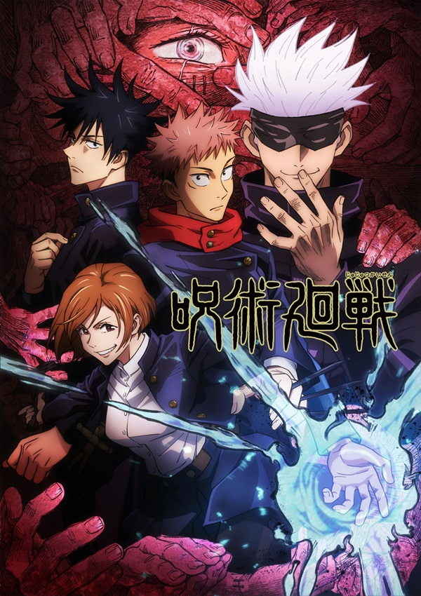

jujutsu kaisen
ข้อมูลตัวละคร
ตัวละครหลัก
พากย์
อิตาโดริ ยูจิ / Itadori Yuuji
Enoki Junya
ฟุชิกุโร เมกุมิ / Fushiguro Megumi
Uchida Yuma
คุงิซากิ โนบาระ / Kugisaki Nobara
Seto Asami
โกโจ ซาโตรุ / Gojou Satoru
Nakamura Yuuchi
เรื่องย่อ

เล่าถึง"อิตาโดริ ยูจิ"นักเรียนวัย 15 ปีผู้อาศัยอยู่ในเมืองเซ็นได แม้ว่าเขาเป็นนักเรียนจอมพลัง แต่ก็ปฏิเสธที่จะอยู่ชมรมกีฬาและมาสิงอยู่กับชมรมเรื่องเร้นลับ เขาเป็นคนไปหยิบวัตถุต้องสาปที่เก็บไว้ในศาลของโรงเรียนมาให้กับรุ่นพี่ในชมรมฯ ขณะเดียวกันก็มีนักเรียนไสยเวท"เมงุมิ"เดินทางมาที่โรงเรียนฯเพื่อรับวัตถุต้องสาปดังกล่าวได้ไปซ่อมผนึกใหม่แต่กลับหาวัตถุดังกล่าวไม่พบ เมงุมิสัมผัสได้ว่าเด็กที่ชื่อยูจิเป็นคนเอาไปและตามยูจิไปที่โรงพยาบาลที่ปู่ของยูจิรักษาตัวอยู่ แต่ยูจิกลับบอกว่าตนได้เก็บไว้แต่กล่อง ส่วนวัตถุในนั้นได้นำไปให้รุ่นพี่แล้ว ซึ่งพวกเขามีกำหนดการแกะผนึกในคืนนี้ ในคืนนั้น รุ่นพี่ในชมรมได้แกะผนึกออกมาจึงทำให้วิญญาณต้องสาปต่างพรั่งพรูออกมาทั่วทั้งโรงเรียน ยูจิและเมงุมิได้รีบกลับไปที่โรงเรียนและพบกับวิญญาณต้องสาปมากมายในตึกเรียน และสามารถช่วยรุ่นพี่ออกมาได้ แต่เมงุมิก็ถูกวิญญาณต้องสาปทรงพลังเล่นงานจนเจ็บตัวและอยู่ในสถานการณ์วิกฤต เมงุมิบอกว่าถึงยูจิจะแรงเยอะแค่ไหนแต่ก็ไม่สามารถเอาชนะคำสาปได้ เพราะไม่มีไสยเวทในตัว ยูจิจึงกลืนวัตถุต้องสาปนั้นเข้าไปและกลายเป็นภาชนะของ "สุคุนะ"
>>รีวิวอนิเมะ<<
Name:
E-mail:
Message: